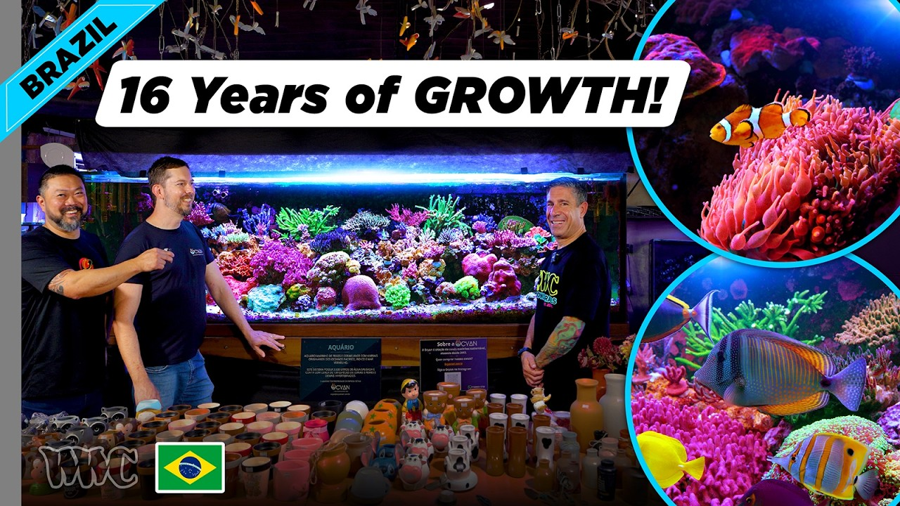

Friday, September 25, 2026 · 32 items · back issues
Howdy, it's Isaac again.
Happy Friday, reefing family, and welcome back to my Weekly Dive.
Busy week — plenty to get through.
Here are the biggest things worth knowing:
- A devastating and mysterious algal bloom that hit the coast of South Australia last year, killing more than…
- Commercial trawlers reported hauling up more than 35 tonnes of protected coral and sponges in New Zealand…
- Lithochloron , a new genus of green algae residing in coral skeleton (Cladophorales, Chlorophyta)
- Population structure and gene flow in the endangered Caribbean reef-building coral, Acropora palmata
- Plus 28 more across husbandry & science, wild reefs, livestock & corals
Let's dive into the news touching our hobby…
Community1
-
Inside Poo Tang Reefs: High-Density Micro-Aquaculture, Automated Precision, and Commercial-Grade Standards
An interview with Poo Tang Reefs about precision micro-aquaculture and commercial practices. Examines how hobbyists can scale systems with professional-grade standards and quarantine discipline.
Reef Builders · Shawn Hale · Sep 22 · reefbuilders.com
Husbandry & Science17
-
Lithochloron , a new genus of green algae residing in coral skeleton (Cladophorales, Chlorophyta)
New endolithic green alga genus discovered living within coral skeletons on the Great Barrier Reef. Coral holobiont biology and algal-coral symbiosis directly inform understanding of what keeps corals alive and healthy.
Journal of Phycology · Heroen Verbruggen et al. · Sep 24 · doi.org
-
mGem: The two-decade evolution of in vivo coral microbiome manipulations
A two-decade review of coral microbiome manipulations and probiotic interventions to improve health. Synthesizes practical coral-restoration techniques and identifies research gaps applicable to both wild and captive recovery programs.
mBio · Lauren Speare et al. · Sep 22 · doi.org
-
Species-specific variation in thermal tolerance in Montipora capitata and Porites compressa corals across two Hawaiian bay habitats
Study quantifies thermal tolerance variation in two dominant Hawaiian reef-builders using controlled heat stress and PAM fluorometry. Understanding species-specific thermal limits is essential for predicting coral survival under ocean warming.
Scientific Reports · Allison M. Klein et al. · Sep 22 · doi.org
-
A miRNA-mediated gene regulatory network supports seasonal plasticity in the temperate coral Astrangia poculata
Research identifies miRNA regulation of seasonal plasticity in temperate coral Astrangia poculata across temperature ranges. Gene-regulatory mechanisms explain how corals tolerate extreme seasonal stress and may inform hardiness in captive systems.
Journal of Experimental Biology · Jill Ashey et al. · Sep 21 · doi.org
-
Microbiota and metabolic disturbance caused by sulfamethoxazole exposure in the scleractinian coral Pocillopora damicornis
Study shows sulfamethoxazole antibiotic exposure triggers immune and metabolic disruptions in Pocillopora corals at low concentrations. Aquaculture antibiotic runoff into reefs is widespread; this reveals molecular mechanisms of antibiotic harm to corals.
Ecotoxicology and Environmental Safety · Zhicong Yan et al. · Sep 19 · doi.org
-
Linking coral stress to groundwater phosphorus loading: a model-based novel framework for water resource management and coral reef protection
Groundwater phosphorus loading drives excess nutrients that stress reefs. A novel modeling framework helps island communities target nutrient reduction to protect local reef ecosystems.
Hydrological Sciences Journal · Chris Leong et al. · Sep 23 · doi.org
-
Food selectivity and grazing responses of the Lawnmower Blenny ( Salarias fasciatus ) to nutrient enrichment and ammonia exposure
Research shows lawnmower blenny feeding selectivity changes with nutrient enrichment and ammonia exposure, altering the nutritional value of algal matrices. Reef tanks with nutrient or waste issues may see altered grazer behavior and tank dynamics.
Journal of Fish Biology · Ramón Gómez et al. · Sep 22 · doi.org
-
Does light and short-term high food availability enhance larval success in the coral eating crown-of-thorns seastar (Acanthaster cf. solaris)?
Study of crown-of-thorns seastar larvae tested how light and phytoplankton pulses affect development and settlement success. Understanding larval drivers matters because COTS outbreaks devastate reefs, and predicting recruitment helps managers intervene early.
Coral Reefs · Frances Patel et al. · Sep 20 · doi.org
-
📑 #NewStudy by Gojanovic et al. investigates whether the time of day a juvenile coral reef fish is released…
A study examined whether release timing affects juvenile coral reef fish survival in the wild. Understanding wild recruitment and larval ecology informs captive rearing and restocking decisions.
Australian Society for Fish Biology — Bluesky · Sep 24 · bsky.app
-
Genomic and phenotypic characterization of a multidrug-resistant Pseudomonas putida strain associated with skin ulceration disease in farmed sea cucumbers (Apostichopus japonicus)
Pseudomonas putida causes skin ulceration in farmed sea cucumbers; genomic characterization shows multidrug resistance. Sea cucumbers are reef invertebrates widely kept in tanks; pathogen identification informs disease prevention and treatment.
Frontiers in Marine Science — Journal · Xiaoke Zhang · Sep 24 · frontiersin.org
-
Structural Characteristics of Artificial Reefs and Coral Larval Recruitment in Turbid Coastal Waters
Artificial reef structure and materials influence coral larval recruitment in turbid waters. Understanding reef engineering design directly informs captive coral restoration and propagation protocols.
Theoretical and Natural Science · Yiman Wei · Sep 22 · doi.org
-
📑 #NewStudy by Darnley et al. investigate an emerging disease affecting an ancient fish, and discover seven…
Researchers discovered seven novel RNA viruses, including two coronaviruses, in an ancient fish species. Understanding emerging diseases in marine organisms informs disease management in captive settings.
Australian Society for Fish Biology — Bluesky · Sep 22 · bsky.app
-
The chromosomal genome sequence of the blushing star coral, Stephanocoenia intersepta (Lamarck, 1816) (Scleractinia: Astrocoeniidae) and its associated microbial metagenome sequences
Complete chromosome and mitochondrial genome assembly published for blushing star coral with 26,627 protein-coding genes and associated microbial data. Genomic resources enable studies of coral physiology, symbiosis, and stress response.
Wellcome Open Research · D. Abigail Renegar et al. · Sep 21 · doi.org
-
Functional distinctions in feeding behavior of two herbivorous reef fish lineages
Comparative study identifies feeding-behavior differences between rabbitfish and surgeonfish families on algae-covered reefs. Understanding herbivory mechanics illuminates how different fish species control algae growth that competes with corals.
Integrative Organismal Biology · Ava Luenenborg et al. · Sep 19 · doi.org
-
Parasite infestation patterns in nine families of coral reef fishes from Saint Martin’s Island, Bay of Bengal
Survey of parasite species infecting nine families of coral-reef fish at Saint Martin's Island. Parasite identification and infestation patterns in wild reef fish inform disease management in captive reef systems.
Dhaka University Journal of Biological Sciences · Subrina Sehrin et al. · Sep 24 · doi.org
-
High-frequency observations of the variations of pCO2 in the Bohai Sea
High-frequency pCO2 monitoring in the Bohai Sea reveals fine-scale carbon-cycle dynamics. Seawater chemistry data from a productive marginal sea contributes to understanding of pH and alkalinity drivers relevant to reef systems.
Frontiers in Marine Science — Journal · Song Gao · Sep 24 · frontiersin.org
-
Tropical Eastern Pacific coral morphometrics: a toolkit for coral studies
3D digitization toolkit developed to distinguish morphologically similar Pocillopora species in the Eastern Tropical Pacific. Better species identification improves restoration outcomes and research accuracy.
Coral Reefs · Sergio D. Guendulain-García et al. · Sep 21 · doi.org
Livestock & Corals1
-
📸 Say hello to the magical West African seahorse, or 𝘏𝘪𝘱𝘱𝘰𝘤𝘢𝘮𝘱𝘶𝘴 𝘢𝘭𝘨𝘪𝘳𝘪𝘤𝘶𝘴, logged on to iSeahorse by citizen…
West African seahorse sighting documented via citizen science platform iSeahorse. Seahorses are commonly kept in reef tanks; tracking wild populations and wild-collected species distribution informs hobbyist sourcing and conservation.
Project Seahorse — Bluesky · Sep 18 · bsky.app
Wild Reefs12
-
A devastating and mysterious algal bloom that hit the coast of South Australia last year, killing more than…
An algal bloom off South Australia killed over 600 marine species and may prevent recovery of giant cuttlefish populations. Sudden ecosystem shifts and die-offs signal environmental stress patterns relevant to reef stability.
UBC Oceans — Bluesky · Sep 24 · bsky.app
-
Commercial trawlers reported hauling up more than 35 tonnes of protected coral and sponges in New Zealand…
Commercial trawlers hauled 35 tonnes of protected coral and sponges from New Zealand waters over six years. Bycatch of reef fauna shows collection pressure and regulatory enforcement gaps affecting wild populations.
UBC Oceans — Bluesky · Sep 24 · bsky.app
-
Population structure and gene flow in the endangered Caribbean reef-building coral, Acropora palmata
Updated genomic analysis of Acropora palmata population structure reveals ongoing decline and asexual dominance. Changes in the most iconic Caribbean reef-builder directly affect wild-stock thinking and captive-breeding priorities for the hobby.
Conservation Genetics · Iliana B. Baums et al. · Sep 24 · doi.org
-
Post-disturbance temperate reef states influence fish contributions to nature and people
Post-heatwave kelp forest fish communities along Baja California show altered contributions to biodiversity and human nutrition. Climate-driven reef-fish reorganization illustrates how disturbance reshapes ecosystems hobbyists draw knowledge from.
Ocean Ecosystems · Paulina Filz et al. · Sep 24 · doi.org
-
Phytoplankton and giant virus diversity during different monsoon seasons, a fish kill, and a saxitoxin episode in a eutrophic mariculture area
Harmful algal blooms in Philippine mariculture area produced saxitoxin and fish kills; phytoplankton and giant virus communities were characterized. Reveals mechanisms behind HAB events relevant to understanding wild reef toxicity and mariculture diseases.
Frontiers in Marine Science — Journal · Grieg F. Steward · Sep 24 · frontiersin.org
-
"Planetary Boundaries describe processes that must remain within safe limits to preserve stability and…
Ocean acidification has breached the Planetary Boundaries threshold for the first time. This milestone underscores the urgent state of seawater chemistry change affecting all reef systems.
Ocean Acidification Research Center — Bluesky · Sep 21 · bsky.app
-
Integrating underwater photo transects and environmental DNA to assess coral genus composition in nearshore reefs of Madura, Indonesia
Study compares underwater photo surveys with environmental DNA to assess coral community composition in Indonesian nearshore reefs. Developing faster monitoring methods in data-limited regions supports conservation prioritization for threatened reefs.
International journal of aquatic biology · Wahyu Andy Nugraha et al. · Sep 20 · ij-aquaticbiology.com
-
Irish researchers seeking to restore deep-sea coral habitats damaged by bottom trawling by installing…
Deep-sea coral restoration using 3D-printed artificial reefs shows successful colonization. Methods for reef habitat recovery may inform restoration approaches.
UBC Oceans — Bluesky · Sep 21 · bsky.app
-
Wind, tides, and waves in a shallow coral reef system: observations and modeling of circulation in Tamandaré (Brazil)
First hydrodynamic model of Tamandaré reef in Brazil reveals wind-driven circulation in shallow lagoon. Understanding these dynamics affects sediment transport and reef resilience predictions in similar systems.
Marine Environmental Research · Luiza Paschoal Stein et al. · Sep 19 · doi.org
-
#FieldworkFriday #AlaskaSky 🧪🌊🦑 This week we are analyzing seawater samples collected by…
Ocean acidification field survey in Alaska's glacial and park waters using seawater analysis. OA affects reef calcification globally, but this work targets non-reef glacial systems outside the reef-keeping subject.
Ocean Acidification Research Center — Bluesky · Sep 18 · bsky.app
-
🌎 You probably have questions about #ElNiño
Scripps Oceanography offers educational content on El Niño and its marine ecosystem impacts. Understanding ENSO cycles helps predict bleaching and reef stress events years in advance.
Scripps Institution of Oceanography — Bluesky · Sep 21 · bsky.app
-
🌧️ How is the incoming #ElNiño shaping up to impact California's coastline?
Scripps researchers discuss El Niño impacts on California coastal erosion. Relevant to understanding oceanographic drivers affecting reef systems, though the article focuses on erosion rather than reef bleaching or productivity shifts.
Scripps Institution of Oceanography — Bluesky · Sep 18 · bsky.app
Resource

Inside a 560-Gallon SPS Reef in Brazil | T5 Lighting, Acropora & Old-School ReefingA 560-gallon Brazilian SPS reef demonstrates decades of experience with T5 lighting, calcium reactors, and minimal automation. The build log shows proven old-school techniques but adds little methodological novelty.
19 min World Wide Corals · Sep 24 · youtube.com
Get it in your inbox
One email a week, free. Every item links to its source.